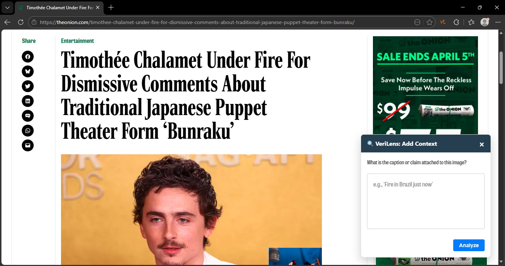
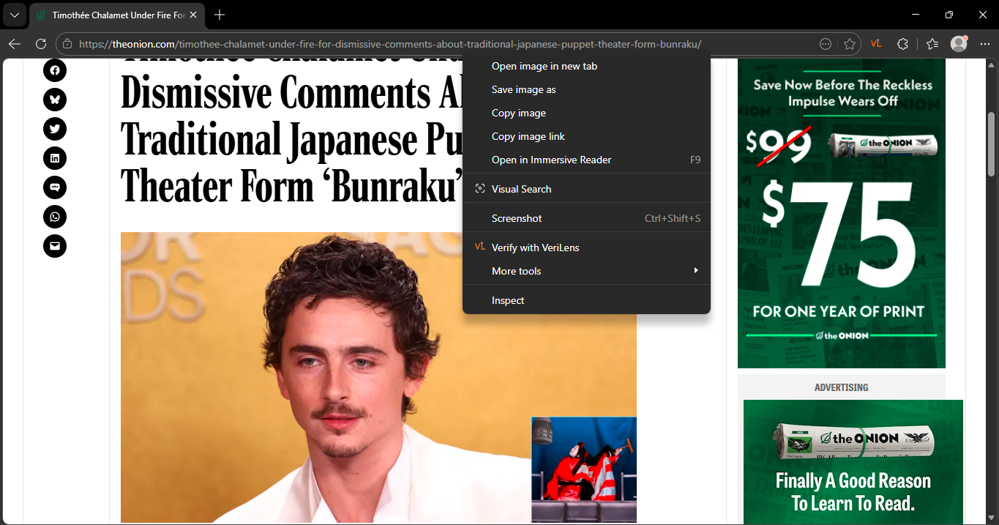
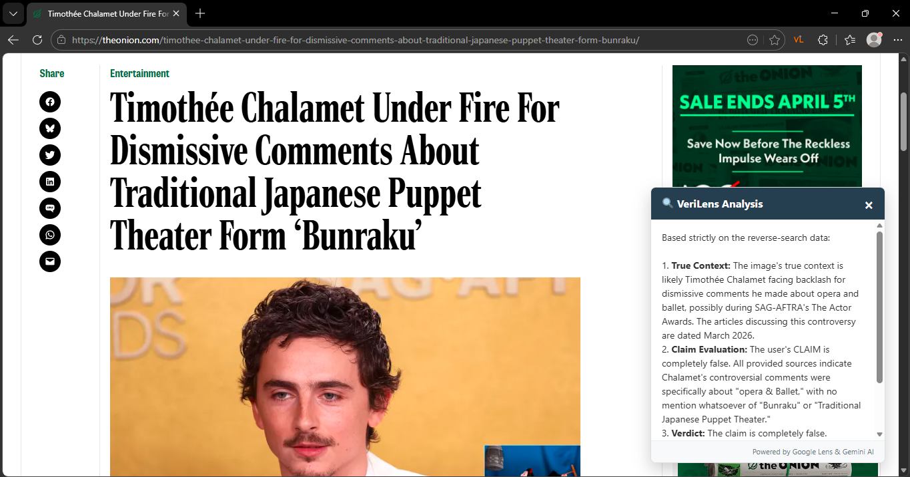

VeriLens: A Multi-Modal AI Framework for Image Provenance and Contextual Verification

> Background: The Problem with Visual Misinformation
The rapid digitization of information has fundamentally transformed how we consume and share news. While this has democratized information, it has also created a massive challenge: false news spreads significantly faster and farther than truthful news online. Where humans are primarily responsible for its circulation.
This problem has only intensified with the rise of accessible generative AI tools. Recent studies show that AI-generated fake news is shared at similar rates to human-made fake news, proving that automated content is just as persuasive.
Vulnerability spans across all demographics. Older adults, often with lower digital literacy, are disproportionately exposed to and likely to share fake news. At the same time, despite having higher awareness, younger generations and digital natives still struggle to accurately differentiate deceptive content from legitimate information.
One particularly powerful form of misinformation is the "recontextualization" of images. These aren't necessarily deepfakes or fabricated images, they are often completely authentic images that have been removed from their original context and paired with misleading captions to drive a false narrative.
> The Solution: What is VeriLens?
To address this, we developed VeriLens, an AI-powered browser extension designed to help users verify images and evaluate whether their associated claims are contextually accurate in real-time.
We wanted to build a tool that requires minimal technical knowledge, embedding digital literacy directly into everyday browsing behavior. By integrating reverse image search capabilities with multimodal artificial intelligence, VeriLens acts as an on-the-fly fact-checker.
> How It Works: Technical Workflow
Let's dive into how the system actually processes an image when a user encounters a dubious claim online. The workflow is broken down into four main steps:
1. Activation
When browsing the web, a user can simply right-click on any image and select the "Verify with VeriLens" option from the context menu. The extension will then prompt the user to input the caption or claim attached to that image.

2. Provenance
Once the claim is submitted, the extension performs a reverse image search using Google Lens (via SearchAPI). This step retrieves prior occurrences of the image online, establishes its earliest known publication date, and pulls relevant source links. By establishing the historical timeline, we build a factual foundation.
3. AI Analysis
Next, the retrieved historical context, the original image, and the user-provided claim are sent to a multimodal AI model (we used Gemini 2.5 Flash for our prototype). The AI evaluates the semantic consistency between all three elements, checking for temporal or geographic inconsistencies and assessing if the visual evidence actually supports the stated claim.
4. Output
Finally, the system generates a natural language explanation. It provides the user with the true context of the image, an evaluation of the specific claim, and a final credibility verdict (e.g., confirming if a claim is completely false).

> Architecture & Ethical Safeguards
The technical architecture consists of a JavaScript frontend for the browser extension, which communicates securely via HTTPS to a backend server. The backend acts as an API gateway managing requests between SearchAPI and Gemini.
When dealing with user browsing data, privacy is a major concern. To protect users, we designed the system for transient data processing. Images and claims are processed on the fly and are not permanently stored, minimizing privacy risks. Additionally, we implemented a caching mechanism that stores frequently searched metadata to reduce redundant API calls and keep operational costs down.
> Experiment & Feasibility
To ensure the project was practical, we ran a cost-feasibility analysis on our prototype.
Assuming an estimation of two searches per day over a month for an individual user, the operational expenses remain highly efficient. Utilizing Google Lens for the reverse search and Gemini 2.5 Flash for the multimodal analysis, our estimated monthly operational cost for 10,000 searches sits at $51.25. This translates to roughly $0.51 per user per month. Because the architecture is modular, it's highly scalable and allows for seamless integration with alternative APIs if pricing structures change.
> Conclusion
By empowering individuals at the exact point of content consumption, VeriLens can meaningfully interrupt the misinformation cycle. Rather than expecting users to independently cross-reference fact-checking websites, VeriLens brings the truth directly to the visual web, helping users transition from simple awareness to active discernment.